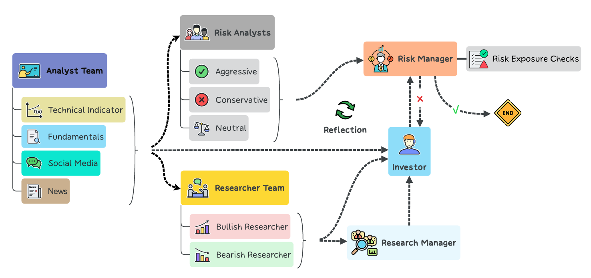

Multi-agent systems based on large language models~(LLMs) has been progressing rapidly. In the financial field, most of the existing research is limited to single-agent systems or multi-agent frameworks with independent data collection, lacking exploration in simulating the trading pipeline of real-world trading firms. This limits the potential benefits that could be gained from real-world trading pipeline. InvestAgents implements an automated multi-agent trading framework. This framework assigns diverse roles to LLM-based agents, such as fundamental analysts, sentiment analysts, and technical analysts, who are responsible for financial analysis, market sentiment capture, and trend prediction respectively. In decision-making, there are three components: 1. Agents holding bullish and bearish arguments, and a debating facilitator agent; 2. Investor agent; 3. Risk management agents with differing investment attitudes and a fund manager agent. They collaborate to make trading decisions. The detailed architecture design and experimental results show that InvestAgents can provide valuable investment insights from multiple perspectives, assisting hedge funds, investment banks in making trading decisions and improving trading performance.
The Architecture of OneLLM, which consists of modality tokenizers, a universal encoder, a universal projection module (UPM) and an LLM.
The modality tokenizer is a 2D/1D convolution layer to transform the input signal into a sequence of tokens. For simplicity, we omit video, depth/normal map tokenizers. The universal encoder is a frozen vision-language model (i.e. CLIP) to extract high dimensional features. The UPM is composed of several projection experts and modality routers to align the input signal with language. For the alignment stage, we train modality tokenizers and UPM, and keep LLM frozen. For the instruction tuning stage, we only train the LLM and keep other models frozen. In a forward pass of UPM, we concatenate the input and modality tokens as input. Then we only take the modality tokens as a summary of the input signal and feed it into LLM for multimodal understanding.
The Analyst Team gathers and analyzes market data across various domains:
Combined, their insights provide a holistic market view, feeding into the Researcher Team for further evaluation.
The Researcher Team critically evaluates analyst data through a dialectical process involving bullish and bearish perspectives. This debate ensures balanced analysis, identifying both opportunities and risks to inform trading strategies.
This process ensures a balanced understanding of market conditions, aiding Trader Agents in making informed decisions.
Trader Agents execute decisions based on comprehensive analyses. They evaluate insights from analysts and researchers to determine optimal trading actions, balancing returns and risks in a dynamic market environment.
Precision and strategic thinking are essential for their role in maximizing performance.
The Risk Management Team oversees the firm's exposure to market risks, ensuring trading activities stay within predefined limits.
They ensure financial stability and safeguard assets through effective risk control.
All agents utilize the ReAct prompting framework, facilitating a collaborative and dynamic decision-making process reflective of real-world trading systems.
Please note that all demo inputs are from the web or the testing set of corresponding modalities.